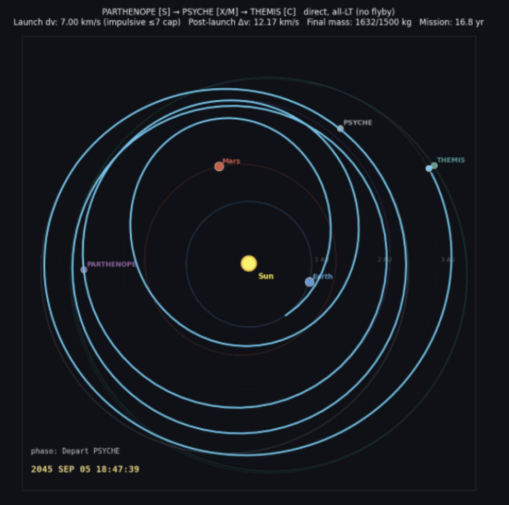

In Caltech’s Ae105c Space Engineering course, taught by former JPL Director Michael Watkins and advised by several other JPL specialists, our 17-person class was given a short mission brief and tasked with designing an entire spacecraft mission. We developed A.F.O.N.S.O., a proposed mission to rendezvous with the asteroids Parthenope, Psyche, and Themis.
I led the Structures and Thermal team. I developed the spacecraft’s primary structural design in SolidWorks, using honeycomb panels and a central load-bearing cylinder. I also built an 18-node transient thermal model in MATLAB to predict component temperatures as the spacecraft traveled between roughly 1 and 3.5 AU. The model included changing solar heating, internal heat loads, insulation, radiators, louvers, and heaters.
Alongside the technical work, I coordinated subsystem interfaces and mass budgets. The course also centered on three project-wide oral reviews (Design Concept, Draft Design, and Final Design), where each team presented its subsystem and defended its choices in front of the class and our JPL instructors. Our class ultimately produced a detailed 166-page mission design report. It was one of my clearest introductions to systems engineering: every spacecraft design decision affects several other teams.
Final mission design report
Our 166-page design for a multi-asteroid rendezvous mission.
Download the report (PDF)